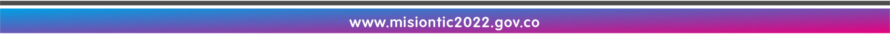

Realiza la instalación del entorno de desarrollo y comprende los primeros pasos del mundo de la programación.
Acciones de aprendizaje
1. Descarga el compilador de Python, y el editor de texto plano Visual Studio Code y realiza la configuración según el tutorial
- Aplicación Visual Studio Code.
- Bedoya, A. [XACA RANA] (24 de abril de 2021). 01 python 101 - Instalación ambiente desarrollo [Video].
2. Visualiza el recurso introductorio Progra-amando.
- Bedoya, A. (2020). Progra-amando <3 (Amor por la programación). Universidad Pontificia Bolivariana.
3. Realiza el programa hola mundo como explica el video de configuración.
- Bedoya, A. [XACA RANA] (24 de abril de 2021). 01 python 101 - Instalación ambiente desarrollo [Video].
4. Elabora un documento con las capturas de pantalla del proceso de creación, compilación y ejecución del programa. Explica, a modo de reflexión personal, ¿por qué se deben instalar estas herramientas?
5. Realiza la entrega del documento en el espacio de tarea: Programa hola mundo.
6. Realiza la entrega del código ejecutable de python holamundo.py a través de este enlace y reconoce el funcionamiento de la plataforma de calificación de retos.
Formas de trabajo
-
Individual: el estudiante es responsable de su proceso de aprendizaje y de las actividades que realiza.
Tiempos (Semana 1)
- Trabajo autónomo estudiante: 6 horas.
- Acompañamiento docente: 3 horas.
Evaluación formativa:
- Identifica el proceso de crear la solución de un problema por medio de un programa.
